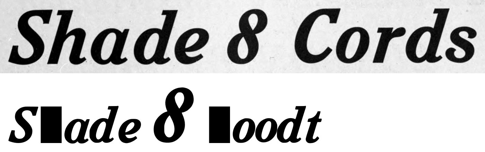
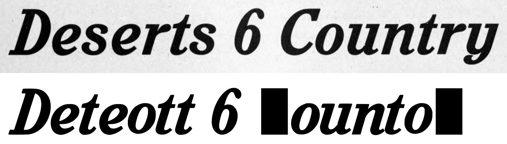
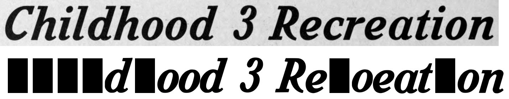
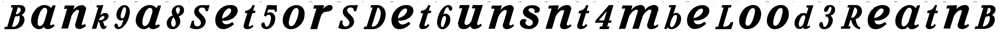

Gray letters are constructed, not traced.


0 warnings, 7 notes.
[
{
"level": "info",
"check": "specks",
"glyph": "S",
"value": 1,
"note": "marks beside the letter were recorded, not cut"
},
{
"level": "info",
"check": "specks",
"glyph": "m",
"value": 1,
"note": "marks beside the letter were recorded, not cut"
},
{
"level": "info",
"check": "specks",
"glyph": "e.42pt",
"value": 1,
"note": "marks beside the letter were recorded, not cut"
},
{
"level": "info",
"check": "specks",
"glyph": "t.36pt",
"value": 1,
"note": "marks beside the letter were recorded, not cut"
},
{
"level": "info",
"check": "cap_from_ascenders",
"line": "537:60pt",
"note": "no capitals at this size; cap height taken from the tallest lowercase"
},
{
"level": "info",
"check": "cap_from_ascenders",
"line": "536:42pt",
"note": "no capitals at this size; cap height taken from the tallest lowercase"
},
{
"level": "info",
"check": "unlabeled_band",
"leaf": 536,
"band": 3,
"note": "reading says: not type"
}
]
{
"537:72pt": {
"n_caps": 1,
"cap_height_px": 305,
"cap_source": "caps",
"baseline_px": 3581,
"baselines": {
"9": 3581
},
"glyphs": [
"B",
"a",
"n",
"k",
"nine"
],
"x_height_px": 209,
"figure_height_px": 312,
"stem_px": 59,
"scale": 2.29508,
"stem_units": 135.4,
"x_height": 480,
"figure_height": 716
},
"537:60pt": {
"n_caps": 0,
"cap_height_px": 171,
"cap_source": "ascenders",
"baseline_px": 2701.5,
"baselines": {
"7": 2701.5
},
"glyphs": [
"a.60pt",
"eight"
],
"x_height_px": 171,
"figure_height_px": 259,
"scale": 4.09357,
"x_height": 700,
"figure_height": 1060
},
"537:54pt": {
"n_caps": 1,
"cap_height_px": 233,
"cap_source": "caps",
"baseline_px": 1634,
"baselines": {
"4": 1634,
"5": 1937
},
"glyphs": [
"S",
"e",
"t",
"five",
"r",
"t.54pt"
],
"x_height_px": 155.0,
"figure_height_px": 234,
"stem_px": 34,
"scale": 3.00429,
"stem_units": 102.1,
"x_height": 466,
"figure_height": 703
},
"537:48pt": {
"n_caps": 2,
"cap_height_px": 204.5,
"cap_source": "caps",
"baseline_px": 959,
"baselines": {
"2": 959,
"3": 1222
},
"glyphs": [
"S.48pt",
"D",
"t.48pt",
"s",
"six",
"u",
"n.48pt"
],
"x_height_px": 139.0,
"figure_height_px": 207,
"stem_px": 35.0,
"scale": 3.42298,
"stem_units": 119.8,
"x_height": 476,
"figure_height": 709
},
"536:42pt": {
"n_caps": 0,
"cap_height_px": 172.0,
"cap_source": "ascenders",
"baseline_px": 3553,
"baselines": {
"10": 3553
},
"glyphs": [
"s.42pt",
"n.42pt",
"t.42pt",
"four",
"m",
"b",
"e.42pt"
],
"x_height_px": 125.0,
"figure_height_px": 182,
"scale": 4.06977,
"x_height": 509,
"figure_height": 741
},
"536:36pt": {
"n_caps": 2,
"cap_height_px": 156.0,
"cap_source": "caps",
"baseline_px": 2746,
"baselines": {
"7": 2746,
"8": 2965
},
"glyphs": [
"L",
"o",
"o.36pt",
"d",
"three",
"R",
"e.36pt",
"a.36pt",
"t.36pt",
"n.36pt"
],
"x_height_px": 106,
"figure_height_px": 158,
"stem_px": 30.0,
"scale": 4.48718,
"stem_units": 134.6,
"x_height": 476,
"figure_height": 709
},
"536:30pt": {
"n_caps": 1,
"cap_height_px": 128,
"cap_source": "caps",
"baseline_px": 2251,
"baselines": {
"5": 2251
},
"glyphs": [
"B.30pt"
],
"stem_px": 26,
"scale": 5.46875,
"stem_units": 142.2
}
}
{
"archive_id": "bookoftypespecim00barnrich",
"title": "Book of type specimens. Comprising a large variety of superior copper-mixed types, rules, borders, galleys, printing presses, electric-welded chases, paper and card cutters, wood goods, book binding machinery etc., together with valuable information to the craft. Specimen book no.9",
"creator": [
"Barnhart, bros. & Spindler, firm, type founders, Chicago",
"De Young family",
"De Young, Charles, 1881-"
],
"publisher": "Chicago, Barnhart bros. & Spindler",
"date": "[1907]",
"ppi": 400,
"url": "https://archive.org/details/bookoftypespecim00barnrich",
"copyright_status": "NOT_IN_COPYRIGHT",
"contributor": "University of California Libraries",
"leaves": [
536,
537
]
}